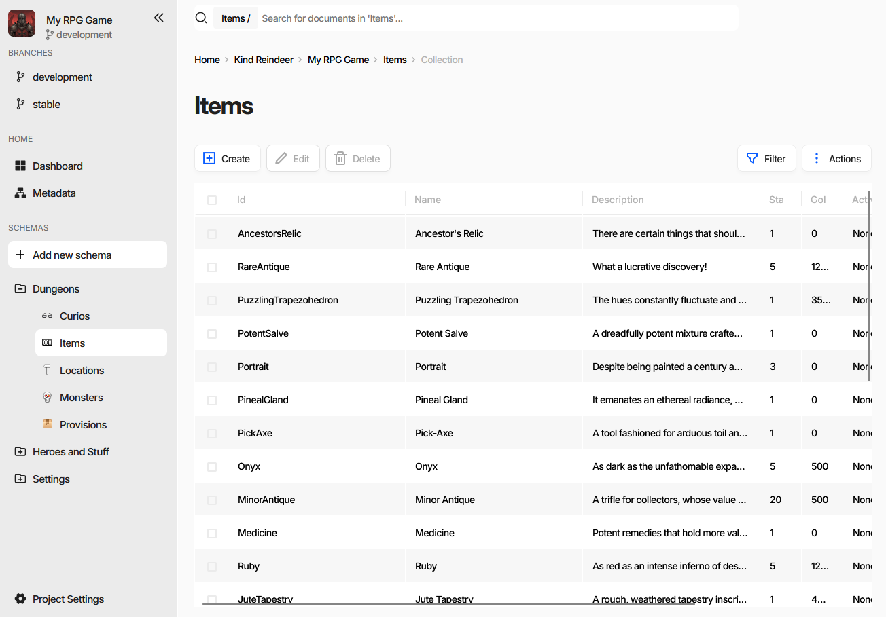
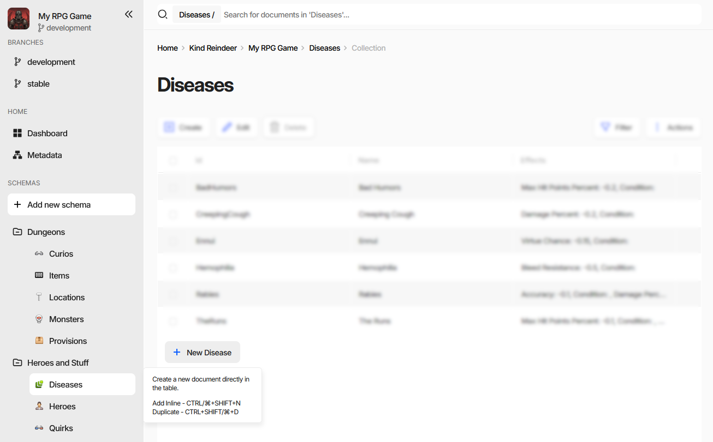
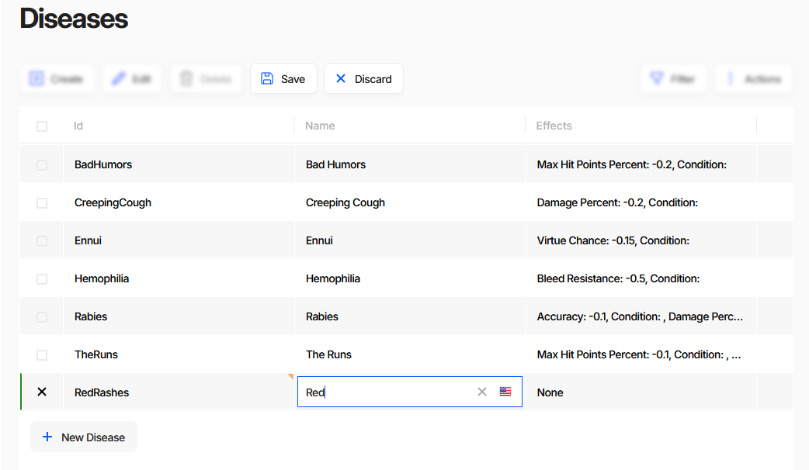
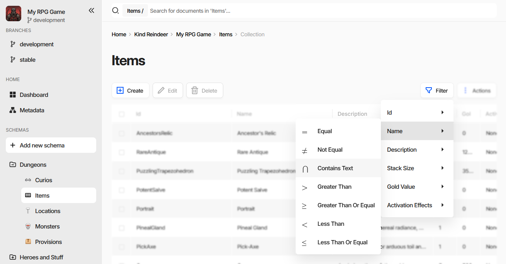
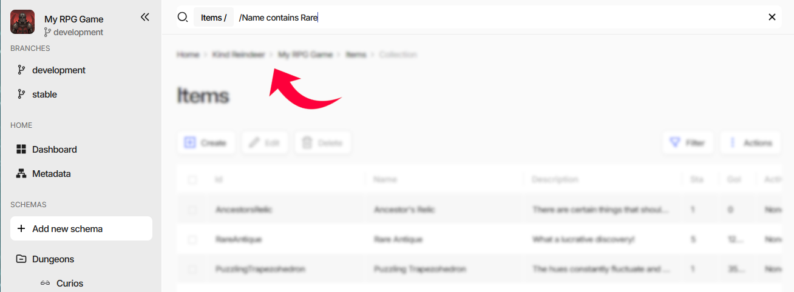
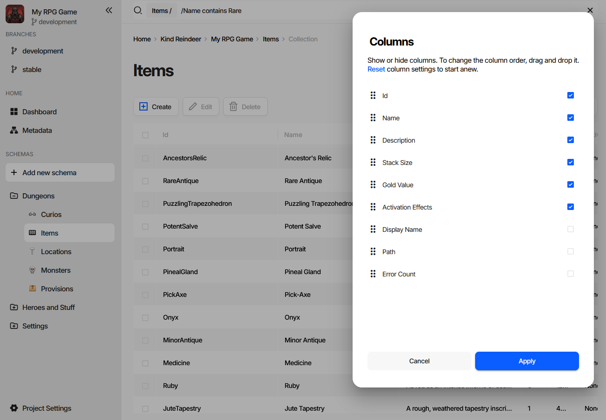
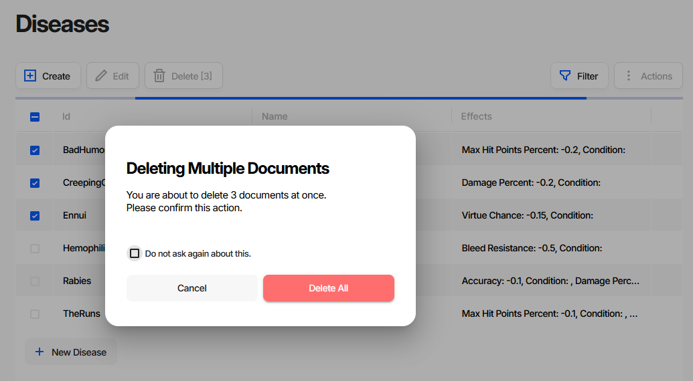
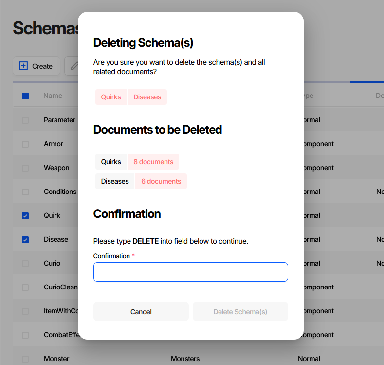

Filling Documents
Schemas describe what a document looks like. The collection page is where documents are actually typed in - a spreadsheet-like grid where rows are documents and columns are schema properties. Most day-to-day data entry never leaves it; larger batches arrive through import instead.
Where Documents Live
Every schema appears in the left side menu, grouped the way its Group field says. Selecting one opens its collection page.

The page has four parts:
The search field at the top, scoped to the current collection - the chip in front of it (
Items /) shows the scope. It does plain-text search and holds filters, see Finding Documents.The toolbar with
Create,Edit, andDelete.SaveandDiscardjoin them as soon as something is changed. When the game data is read-only,EditreadsViewand the editing buttons are hidden.The grid, one row per document. It is virtualized, so a collection of any size scrolls in a single page.
Filter and Actions on the right.
Note
In the web editor the avatars of teammates viewing the same collection appear next to the Filter
button, and the grid marks the fields they are editing.
Creating Documents
Create opens an empty document form for the collection’s schema. Fill in the fields, press Save, and
the new document appears in the grid.
For entering many short documents in a row, stay in the grid instead. The + New <Schema> button under the
last row adds a row in place:

The row appears immediately but is not written to the database until you save it, exactly like any other grid edit.
Editing in the Grid
Double-click a cell, or select it and press Enter, to edit it in place. The editor that opens matches the property’s data type - a text box, a number field, a date picker, a reference picker, and so on. Arrow keys and Tab move between cells.

Edits stay local until they are saved. Changed cells and their rows are marked, and Save and Discard
appear in the toolbar:
Savewrites the changes and makes them visible to everyone else. With rows selected it saves only those rows; with nothing selected it saves everything that changed.Discardreverts to the last saved state, following the same selection rule.When a changed document fails validation,
SavebecomesSave Anywayand carries a badge with the number of errors. Charon stores the document anyway.
Note
Broken data is allowed while you work on it. A reference pointing at a document that does not exist yet, a required field still empty, a formula that does not parse - none of that stops a save, in the editor or in the CLI. Half-finished data is a normal state during development, and a tool that refuses it forces you to invent placeholder values just to close a form.
The tolerance ends at publication. Generated code and the game-side loaders assume the data satisfies the schema, so anything the Publication wizard reports as a critical issue should be fixed before shipping, not after. See Validation for the checks, the two severities, and how to gate a build on a clean review.
Action |
Shortcut |
|---|---|
Create a document in the form |
Ctrl/⌘+Alt+N |
Add a row inline |
Ctrl/⌘+Shift+N |
Duplicate the selected document |
Ctrl/⌘+Shift+D |
Open the edit form |
Ctrl + click on the row |
Edit a cell in place |
double click, or Enter |
Save |
Ctrl/⌘+S |
Save ignoring validation errors |
Shift + click on |
Undo / Redo |
Ctrl/⌘+Z / Ctrl/⌘+Y |
Finding Documents
The search field above the grid does two things: plain-text search over the collection, and structured filtering by property.
Filtering by Column
Filter is a shortcut that writes the first half of a filter for you. Pick a property, then a comparison:

Choosing Name → Contains Text types /Name contains - with a trailing space - into the search
field and puts the cursor at the end of it. Type the value and press Enter:

The finished filter becomes a chip in front of the search field and the grid narrows to the matching rows. Repeat to add more filters - they all apply together. Removing a chip removes that filter.
Properties of an embedded document open a submenu, and the path written into the field points inside the
document: /Stats/Hp > 10.
Writing Filters by Hand
The menu only saves typing. The same filter can be typed straight into the search field as
[property] [operator] [value] followed by Enter. Quote the value if it contains spaces - single
quotes, double quotes, and backticks all work:
/Name contains "Ancestor Relic"
/StackSize >= 5
/GoldValue != 0
Comparison |
From the menu |
Also accepted |
|---|---|---|
Equal |
|
|
Not Equal |
|
|
Contains Text |
|
|
Greater Than |
|
|
Greater Than Or Equal |
|
|
Less Than |
|
|
Less Than Or Equal |
|
|
One of a set |
- |
|
Whatever is left in the field that is not a complete filter is used as plain-text search.
Sorting and Column Width
Click a column header to sort by that column, click again to reverse the direction. Column widths are dragged from the right edge of the header.
Choosing Columns
Actions → Customize Columns... decides which properties become columns and in which order.

Tick a property to show it, drag it by the handle to move it, then press Apply. Reset returns the
grid to the schema’s own order.
Three extra columns are offered besides the schema’s properties: Display Name - the document’s rendered display text, Path, and Error Count, the number of validation issues found in the document.
Changing What the Columns Are
Customize Columns... can only pick from properties the schema already has. To add a property, rename one,
or change its data type, use Actions → Design: it opens the schema of the current collection in the
schema editor. Saving there updates the grid.
See Creating Document Type (Schema) and Schema for the fields of that form.
Deleting Documents
Tick the rows and press Delete - the button carries the number of selected documents. Deleting more than
one asks for confirmation first:

Do not ask again about this stores the answer in your personal preferences for the project, so later multi-document deletions run without the dialog.
Note
Deleting a document does not clean up references to it, and the deletion is not blocked by them. They stay behind as broken references, which validation reports - the quickest way to find everything that pointed at the removed document. Like any other invalid data, they are tolerated while you work and should be resolved before publishing.
Deleting a Schema
Deleting a schema is a different operation with a much wider blast radius, and it is done from the schema list (Metadata in the side menu), not from a collection page.

The dialog lists everything the deletion takes with it:
the schemas themselves, as chips at the top;
Properties to be Deleted - properties of other schemas that point at the ones being deleted. A reference, a reference collection, an embedded document, or a document collection of a deleted schema cannot outlive it, so the property is removed from that schema and its values from every document of it;
Documents to be Deleted - how many documents each deleted schema takes down.
Warning
That cascade cannot be undone from the UI. The Delete Schema(s) button stays disabled until you type
DELETE into the confirmation field.
Tip
Take a backup before deleting a schema that other schemas reference.
Bringing Data In From Files
Typing is one way to fill a collection. The other two are the import wizard and a plain drag and drop:
Actions→Import...opens the wizard, which chooses between adding, replacing, and updating documents.Dragging a file onto the grid starts the same import for the current collection.
Actions→Export To→Spreadsheet (.xlsx), followed by a drop of the edited file back onto the grid, makes a round trip through Excel or Google Sheets - still the fastest way to do bulk numeric balancing.
Structure requirements for imported files and the full walkthrough of both wizards are in Importing and Exporting Data.
Automating from the CLI
Every grid operation has a command line equivalent, which is what CI jobs and generator scripts use.
# list documents of a collection
dnx dotnet-charon -- DATA LIST \
--dataBase "c:\my app\gamedata.json" \
--schema Item
# create one document from a file
dnx dotnet-charon -- DATA CREATE \
--dataBase "c:\my app\gamedata.json" \
--schema Item \
--input "c:\my app\item.json"
# update one document
dnx dotnet-charon -- DATA UPDATE \
--dataBase "c:\my app\gamedata.json" \
--schema Item \
--input "c:\my app\item.json"
# delete one document
dnx dotnet-charon -- DATA DELETE \
--dataBase "c:\my app\gamedata.json" \
--schema Item \
--id "AncestorsRelic"
For bulk changes use DATA IMPORT instead of a loop over
DATA CREATE.